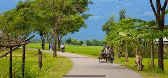

Mt first web site name is, Chondon tour world.
Mount Everest is the highest point on Earth. Learn about its history, the people who live there, and the people who visit to climb.
Mount Everest is a peak in the Himalaya mountain range. It is located between Nepal and Tibet, an autonomous region of China. At 8,849 meters (29,032 feet), it is considered the tallest point on Earth. In the nineteenth century, the mountain was named after George Everest, a former Surveyor General of India.The Himalayan mountains have long been home to indigenous groups living in the valleys. The most famous of these are the Sherpa people. The word “Sherpa” is often used to mean mountain guide, though it actually refers to an ethnic group. The Sherpa have valuable experience in mountain climbing, which they can provide to other climbers. Most climbs of Everest would be impossible without the Sherpas’ logistical help and knowledge. They climbed the mountain in 1953 and hold the record together. The first records of Everest’s height came much earlier, in 1856.
Our Earth is basically covered with seas and oceans at its Southern Hemisphere. The Northern Hemisphere have almost comparable portion of land and water.
There is a difference of temperature and salinity at different portions of the sea such as at different depths and different areas. This differences produces deep sea currents. Also surface currents are formed by friction of waves produced by the wind and by tides, changes in the local sea level produced by gravity of The Moon and the Sun.Sea is a storehouse of treasure in the form of uncountable life forms of which a lot more are yet to be discovered. Also it is a storehouse of minerals. Sea is a very mysterious place and due to its vast nature it always drives human beings curious about it.

The most beautiful scenery in the world can be seen in the village
My village name is Ashatola. It’s a very ordinary village in Bangladesh. The most important thing about our village is it’s a peaceful place to live in. Muslim and Hindu, both religious people are living here together. We have a primary school and a high school in our village. That’s why we don’t need to go outside to study. It’s a really good thing for us. We have a market in the village and can buy almost everything that we need from there. The natural beauty of my village is amazing. I love to live here with the people I know best.
